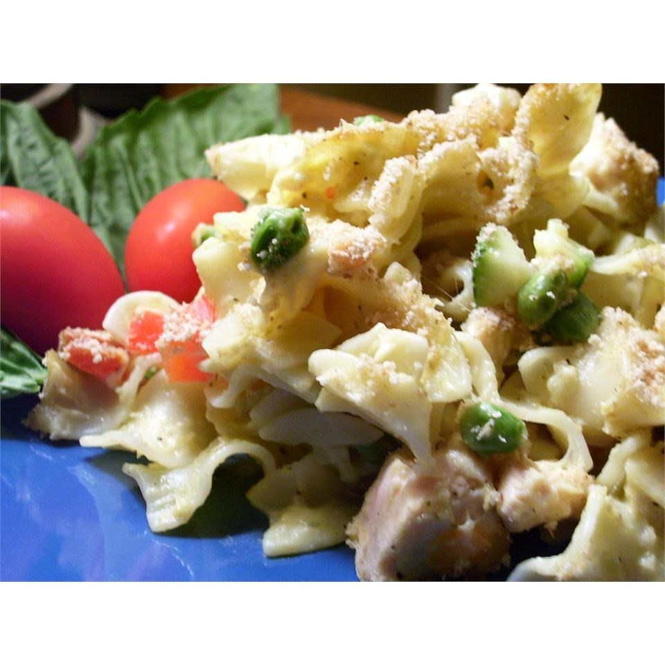

Cheesy Tuna Noodle Casserole

Description
This was a favorite in my home growing up and now it's a favorite of my family
as well. I double the recipe these days for my husband and three children.
For a change of pace I add canned chopped green chilies and 1/8 teaspoon
cayenne, use pasta shells or spirals, or top the casserole with sliced
American or cheddar cheese instead of breadcrumbs.
Ingredients
- 1 (12 ounce) package egg noodles
- 2 tablespoons vegetable oil
- ¼ cup chopped onion
- ¼ cup chopped green bell pepper
- ¼ cup red bell pepper, chopped
- 1 (11 ounce) can condensed cream of Cheddar cheese soup
- 1 (5 ounce) can tuna, drained
- ¼ cup milk
- ¼ teaspoon salt
- ground black pepper to taste
- ¼ cup Italian seasoned bread crumbs
Steps
- Preheat oven to 350 degrees F (175 degrees C).
- Bring a large pot of salted water to boil; place noodles in water and
bring to boil again. Cook until al dente; drain well.
- While noodles are cooking saute in a medium size saucepan vegetable oil,
onion, green and red bell peppers. Saute until tender.
- Pour soup, tuna, milk, salt and black pepper into the saucepan.
Mix well over medium-low heat.
- Fold the noodles into the saucepan.
- Pour entire mixture into a 2 quart casserole. Sprinkle bread crumbs over
the mixture. Bake 20 to 30 minutes or until the top is crisp and golden
brown.